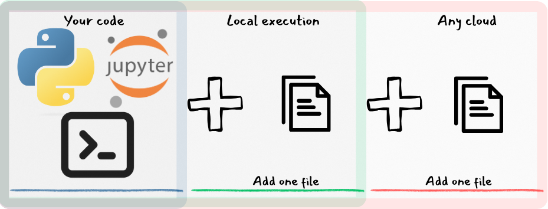

Runnable¶
,////,
/// 6|
// _|
_/_,-'
_.-/'/ \ ,/;,
,-' /' \_ \ / _/
`\ / _/\ ` /
| /, `\_/
| \'
/\_ /` /\
/' /_``--.__/\ `,. / \
|_/` `-._ `\/ `\ `.
`-.__/' `\ |
`\ \
`\ \
\_\__
\___)
What does it do?¶

Example¶
functions¶
The below content is assumed to be examples/functions.py
pydantic models
The functions should use pydantic models as their outputs.
Pydantic models offer better representations of the input and output, inspired by FastAPI's implementation.
There is nothing special about the functions, they are plain old python functions.
Notebooks and Shell scripts
You can execute notebooks and shell scripts too!!
They can be written just as you would want them, plain old notebooks and scripts.
local  ¶
¶
Replace the "driver" function with a runnable definition in either python sdk
or yaml.
pipeline and steps
The pipeline is essentially a representation of the "driver" function.
The gains by this definition for local executions are clearer by the metadata gathered during the exeuction.
- Start the pipeline execution at step1
- The name of the step.
- The path to the python function
- Go to step2, if successful
- Go to success node, if successful
- Mark the execution as success
pipeline and steps
The pipeline is essentially a representation of the "driver" function.
The gains by this definition for local executions are clearer by the metadata gathered during the exeuction.
- The name of the step.
- The path to the python function
terminate_with_successindicates that the pipeline is completed successfully. You can also useterminate_with_failureto indicate the pipeline fail.- There are many ways to define dependencies within nodes, step1 >> step2, step1 << step2 or using depends_on.
- Start the pipeline execution at step1
- The list of steps to be executed, the order does not matter.
- Add
successandfailnodes to the pipeline. - Returns the metadata captured during the execution.
TODO: Change this¶
Captures information to understand the execution plan for debugging or lineage purposes.
1 2 3 4 5 6 7 8 9 10 11 12 13 14 15 16 17 18 19 20 21 22 23 24 25 26 27 28 29 30 31 32 33 34 35 36 37 38 39 40 41 42 43 44 45 46 47 48 49 50 51 52 53 54 55 56 57 58 59 60 61 62 63 64 65 66 67 68 69 70 71 72 73 74 75 76 77 78 79 80 81 82 83 84 85 86 87 88 89 90 91 92 93 94 95 96 97 98 99 100 101 102 103 104 105 106 107 108 109 110 111 112 113 114 115 116 117 118 119 120 121 122 123 124 125 126 127 128 129 130 131 132 133 134 135 136 137 138 139 140 141 142 143 144 145 146 147 148 149 150 151 152 153 154 155 156 157 158 159 160 161 162 163 164 165 166 167 168 169 170 171 172 173 174 175 176 177 178 179 180 181 182 183 184 185 186 187 188 189 190 191 192 193 194 195 196 197 198 199 200 201 202 203 204 205 206 207 208 209 210 211 212 | |
 Thats it!!
Thats it!!
By adding one file you created a pipeline. Your application code did not change at all.
There is no boilerplate code, no adherence to structure, no intrusion into the application code.